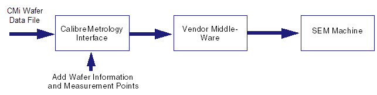
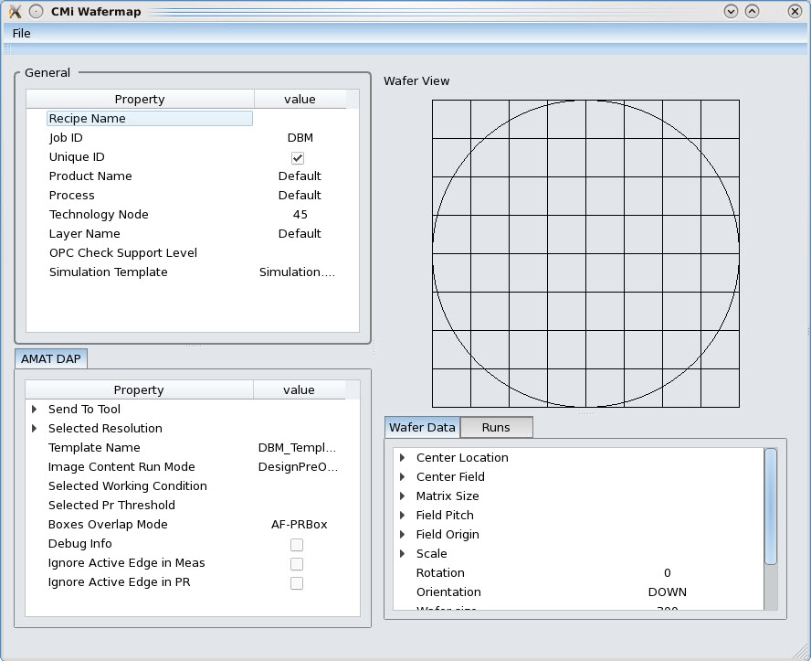
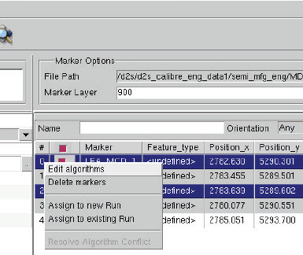
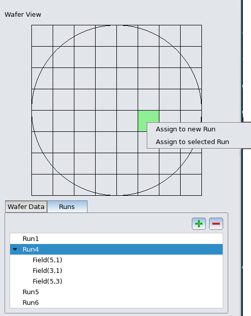

Wafer data is
often used to complete SEM recipes for machine vendor middle-ware
to speed up and enhance the metrology process cycle. You use CMi
to generate or edit an existing wafer data XML file that includes
wafer parameters needed to generate an AMAT DWM and Hitachi IDW
file.
CMi’s main
role in the SEM recipe generation flow is to generate, complete,
and correct measurement point recipe files and layout clips. The
output of CMi runs are used as an input to a vendor’s middle-ware.
Typically, a metrology engineer uses the middle-ware to complete
the SEM recipe by adding wafer data before sending them to the SEM machine.
However, using CMi, you can reduce the time it takes to include
wafer data in this process by adding it as input to CMi instead.
Figure 1. CMi Role in SEM Recipe Generation
You view and edit the wafer data parameters
loaded from the XML file through the Wafer Map Manager utility.
Procedure
- In the CMi window, select Tools > Wafer Map Manager.
- Select Tools > Wafer Map Manager.
The Wafer Map Manager appears.
Figure 2. Wafer Map Manager
- In the Wafer Map Manager,
edit any of the parameter values as needed.
Note: By
default, wafer maps are displayed and edited in mm units. However,
for AMAT output, the wafer map units are converted to ums.
- Define
logical groupings of markers called Runs to generate an output wafer
map using one of the following methods:
Select
markers from the Sites Table, then right-click and choose Assign
to New Run (to create a new marker group) or Assign
to Existing Run (to add to an existing group).
Figure 3. Adding
Runs from the Sites Table
Select markers
from the Sites Table, then in the Wafer Map Manager click the green
plus button in the Runs tab to add marker groups
as individual Runs.
Each new run appears in the Runs tab.
You can delete a Run by clicking the red minus button in the Runs tab.
- In the
Wafer View pane of the Wafer Map Manager, select fields of the wafer
map, then right-click and select either Assign to Selected Run or Assign
to New Run to map the fields to a run, or add to a new
run. The fields appear under the selected Run in the Runs tab.
Figure 4. Highlighting
in the Runs Tab
- In the
Wafer Map Manager, edit any of the parameters listed in the General, Wafer
Data, AMAT DAP or Hitachi
IDW tabs.
- In the Job Configuration area
of the main CMi window, select Output
Options and enable Amat Output or Hitachi
Output.
- Click the Generate Output button (the green
circle with white triangle) in the CMi button bar.
- To save
a wafer map session, select File > Save
Session. To load an existing wafer map session, select File > Open
Session. To create a new session, select File > New Session.
- To exit
the wafer map manager, select File > Exit.
Results
The resulting output is an AMAT
DWM or Hitachi IDW file.